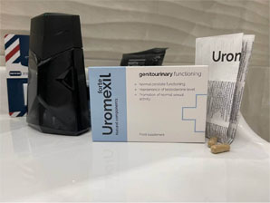

Milyen esetekben gyógyítható a prosztatagyulladás önállóan és hogyan?
A prosztatagyulladás otthoni kezelése lehetséges!
Minden második 30 év feletti férfi ki van téve egy gyakori betegségnek, amelyet a húgyúti rendszer fertőzései okoznak. Az immunrendszer legyengül, és így a káros organizmusok könnyebben behatolnak a szervezetbe. Minden évben 25%-kal nő a prosztata kialakulásának kockázata.
Most pedig beszéljünk arról, hogyan védheti meg egészségét a férfi betegségektől, és hogyan lehet gyorsan és biztonságosan kigyógyulni a prosztatagyulladásból otthon. Erről Európa egyik vezető proktológusával beszélgetünk ma, Dr. Szeredi Áronnal.
A prosztatagyulladás kényes probléma, ugyanis az embernek először nincsenek különösebb panaszai rá, amiket megosztana mondjuk egy orvossal is, ugyanakkor otthon ugyancsak nehezen ismerhető fel a kezdeti szakaszban. Mit csinálnak a férfiak, ha kellemetlen érzést tapasztalnak az ágyékukban, vagy az anális területen? 10%-uk orvoshoz fordul, 90%-uk viszont öngyógyításba kezd, pedig még csak nem is tudják pontosan, mi a problémájuk.
Ennek következtében a gyulladásos folyamatok súlyosbodnak, és ezekhez a folyamatokhoz csatlakoznak a szomszédos szervek is. A legjobb esetben csak prosztata adenoma alakul ki, a legrosszabb esetben viszont akár prosztatarák és veseelégtelenség is lehet a következmény. Hát akkor az ember már nem fog azon gondolkodni, hogy szégyell orvoshoz fordulni.
A legtöbb proktológus a rektális masszázs szerintük hatékony módszeréhez fordul. Igen, ez valóban gyakran segít. Az eljárás kellemetlen, a betegek azt mondják, megalázó.
Viszont vannak más módszerek is. Nem fogok előadást tartani az
egészséges életmód és a személyes higiéniai szabályok hasznáról. Biztos vagyok
benne, hogy nélkülem is tudják ezt. Beszéljünk inkább a
készítményekről.
Összesen háromféle van belőlük: vírusellenes,
gyulladáscsökkentő és biológiailag aktív.
Az első két csoportot kizárólag a külön-külön végzett kivizsgálások keretében lehet szemügyre venni. Ha a vizsgálatok eredményei is utalnak rá, a prosztata ultrahangja felfedheti a betegség etiológiáját, és így már ajánlható rá terápia is.
A szer hálózaton keresztül értékesített vírusellenes és gyulladáscsökkentő szer ma azonban több előkészületet is igényelnek, ha velük akarja az ember kezelni a problémáját, több közülük pedig teljesen hatástalannak bizonyul. A legrosszabb csak az, hogy egy konkrét antibiotikum hatákonyságának fokát csak a kezelés megkezdése után lehet megállapítani.
A szer szedésének leggyakoribb negatív következményei közül a vesék romlása, a kiválasztó rendszer működészavarai, a csökkent szexuális funkció és a libidó csükkenése említendők meg. A helyzet kellemetlen.
Pont ezért én az elmúlt 10 évben a praxisomban már bioaktív készítményeket használok a prosztagyulladás, valamint a prosztata adenoma kezelése során.
A természetes alapú készítmények gyorsan és fájdalommentesen, és ami a legfontosabb, rektális masszázs nélkül - amelytől a betegek annyira félnek - oldják meg a problémát.
A sokéves gyakorlati és tudományos tevékenységem alatt több ezer olyan esetet láttam, amikor egy szer az egyik páciensnek segít, a másiknál viszont teljesen hatástalan. Ez megengedte azonban a számomra, hogy kijelölhessek a biológiailag elérhető szerek sokaságában néhány vezető készítményt. Az egyikről szeretnék részletesebben is beszélni.
A szer neve "". Ez egy poliaktív biogén szer kapszula formájában, amely olyan anyagok komplex együttese, amelyek aktívan megújítják a károsodott sejteket, és intenzíven helyreállítják a prosztata működését.
Ezen összetevők együttese a sejtek leghatékonyabb regenerálódását biztosítja, a kombináció összetevői stabilizálják a tesztoszteronszintet, helyreállítják a vizelést, és megszüntetik a fájdalom szindrómát is már a szer első használata után.

A kapszulák bevétele során a "" teljes mértékben helyreállítja az urogenitális rendszert, eltávolítja a felesleges folyadékot a prosztatából, és megakadályozza a társbetegségek kialakulását.
Ez a hatékonyság a természetes nyersanyagokból származó hasznos tápanyagok koncentrációjával érhető el, amelyek kivonásakor a legújabb hideg sajtolásos technológiát alkalmazzák.
A szer természetes összetétele és a kémiai vegyületek hiánya lehetővé teszik, hogy a "" kapszulák vény nélkül is beszerezhetők legyenek a prosztata otthoni kezelésére.
A szerkesztőség utószava.
Az "" kapszulák teljesen a
mai
napig csak a főváros központi koloproktológiai klinikáján vásárolhatók meg.
Azon prosztatagyulladásban szenvedő férfiak számára, akiknek nincs lehetőségük a központi klinikára való ellátogatásra, most már elérhetővé vált az online megvásárlása a gyártó honlapján keresztül. Megállapodtunk a gyártóval, hogy egy promóció keretében kijelölnek egy készletet az online megrendelők számára három hónapig, teljesen -ig.
Arra is köteleztük a gyártót, hogy konzultálciót nyújtson az oldalon vásárlók számára. Mindaddig, amíg él az akció, a szakemberrel történő konzultáció teljesen ingyenes!
Köszönöm, nagyon aktuális!
A prosztatagyulladás gyakran a szex hiánya miatt jelentkezik. És sok múlik a nőkön is. Vannak, akik impotenssé tesznek téged már a 20-as éveidben:(
Egyetértek, ez valóban így van. de ha meg biztosan tudod, hogy a baj nem a nővel van, akkor még ijesztőbb a dolog! A saját bőrömön tapasztaltam meg. Fejben fel vagyok izgulva, de a testem nem reagál erre. Kiderült, hogy a prosztagyulladás az oka, amit én évekig figyelmen kívül hagytam. Mi több, nem csak egy lánnyal próbálkoztam. Elég gáz volt. Köszönöm az ismerősömnek, hogy ajánlotta nekem az "", én csak hálás vagyok neki. Szó szerint egy pár hét, és újra a régi önmagam leszek!
Tényleg nem kell orvoshoz menned, és mindent magad megoldhatsz??? Nagyon király!
Amikor hallottam az "" kapszulákról, azonnal megrendeltem. 3 napja szedem, és azt mondhatom, hogy már nem fájdalmas a WC-re menni. És már nem is futok oda olyan gyakran, mint régen.

Nem semmi cikk! Köszönöm a segítséget.
A feleségem a 7. mennyországban van a boldogságtól! Annyira aggódott, hogy prosztatagyulladásom van. Féltem, hogy nem tudunk még egy gyereket vállalni. De most minden rendben van. A meddőség miatt már nem aggódom, mert meggyógyultam, kikezeltem az okot, a prosztatagyulladást. És mindez az "" köszönhető. Mindekinek ajánlom!!!
Nem hiszek az ilyen dolgokban. Nekem semmi sem segít, sem a masszázs, sem a szer. Ez meg egy hónap alatt megolja a problémát? Hagyjuk már. És még természetes összetevők is...
Pedig kár! A feleségem és én is szembesültünk ezzel a problémával... Igaz, én elmentem orvoshoz is, hogy ne öljem már meg magam. A kezelésem a tesztekkel meg mindennel együtt 500 lepedőre jött ki, és felírták az "" kapszulát. Persze nagyon örülök neki, hogy ilyen olcsó és még hatékony is, de sajnálom a kidobott pénzt az orvosra és a sok felesleges vizsgálatra. Mindez sokkal olcsóbban is kijött volna, ha tudok erről. És a kompozíció igen, biztonságos és nincs ellenjavallat vele kapcsolatban.

Segített valaki másnak is???
Hol jobb megrendelni?
Vedd meg a linken, akkor nem nézed be. Mert most aztán minden második ember próbál eladni neked valamit a pincében, seftelnek mindenhol fene tudja mivel!
Miután egy hideg gyárban kezdtem el dolgozni, észrevettem, hogy fájdalmassá vált a vécézés. Inkább tűrtem, féltem orvoshoz menni, azt hittem, majd magától elmúlik. De csak rosszabb lett. Egy piálás során elmondtam egy ismerősömnek. Ő meg őszintén bevallotta, hogy jómaga is ezzel szenvedett, de aztán meggyógyult. És ő ajánlotta a készítményt, még azt is elmondta, hol vegyem meg. Már egy hét után megkönnyebbültem. Tehát, akinek gondja van, ne gondolkodjon, rendelje meg habozás nélkül! A szer le van tesztelve és tényleg hatékony. És a legfontosabb, hogy az "" még alkohol mellett is lehet szedni, és nem károsítja a májat, a veséket és a szívet sem.